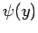

Inhalt Index DeskTop Bronstein

 Lineare Integralgleichungen Fredholmsche Integralgleichung 1. Art Begriffe, analytische Grundlagen
Lineare Integralgleichungen Fredholmsche Integralgleichung 1. Art Begriffe, analytische Grundlagen


Eine Funktion  heißt quadratisch integrierbar im Intervall  , falls gilt:
, falls gilt:
Insbesondere ist jede in [a,b] stetige Funktion auch quadratisch integrierbar. Der Funktionenraum aller in [a,b] quadratisch integrierbaren Funktionen wird mit L2[a,b] bezeichnet.